Body size rule: before and after
Same agent pipeline, parts and concept pictures. Before: the body's front was capped so the screen covered at least 40-50% of it, which squashed every body to the screen's height. After: the screen only has to cover 35% along its long side and 20% across, and the body takes its proportions from the concept. Eight full runs (body, then case) on 8 Nov 2026. Scores are the look reviewer's, out of 10. Frog, whale and rocket are held-back designs never used for tuning. The hamster's concept picture came from a commercial AI design tool, given the same parts.
| Design | Before | After | Inside fits (every must-pass check) | Closer to the concept? |
|---|---|---|---|---|
| Hamster | 6 | 7 | yes | yes, clearly |
| TV | 6 | 7 | yes | yes |
| Dino | 6 | 6 (body 7) | yes | yes, clearly |
| Kitten | 6 | 6 | yes | yes |
| Frog (held back) | 6 | 5 | yes | shape yes; a rough cut by the screen |
| Robot | 7 | 6 | yes | about the same |
| Whale (held back) | 6 | 6 | yes | no |
| Rocket (held back) | 5 | failed | no case | its body was the closest yet, but a rule rejected it: the nose and fins were not added as named features |
Hamster
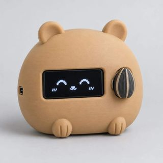
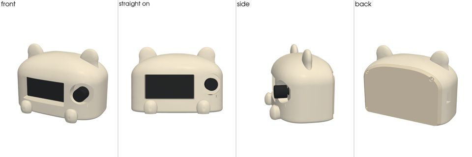
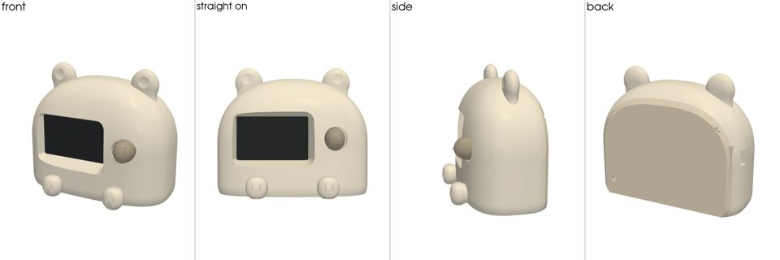
TV
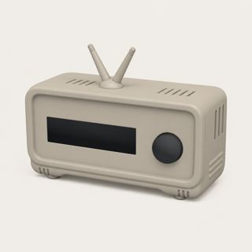
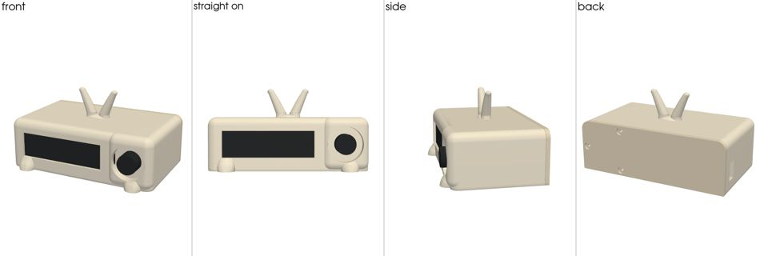
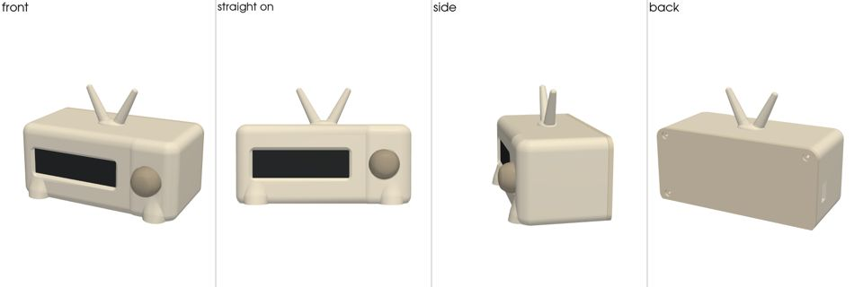
Dino
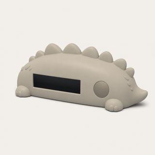
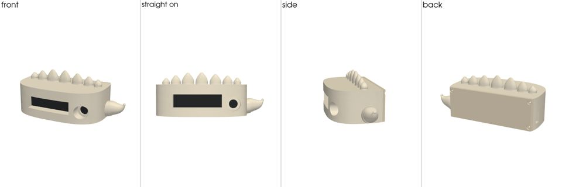
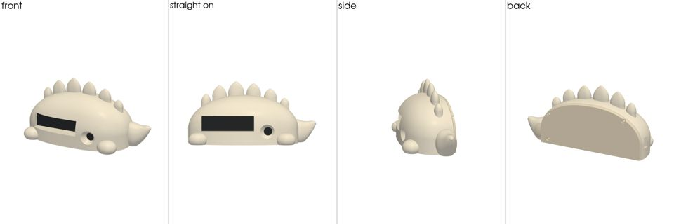
Kitten
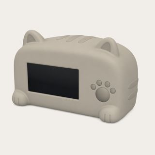
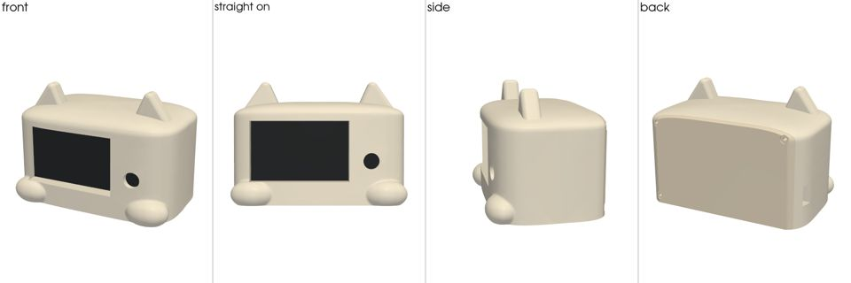
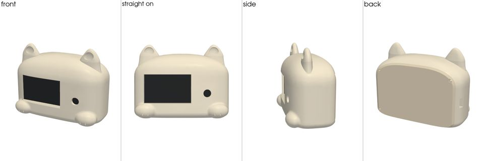
Frog (held back)
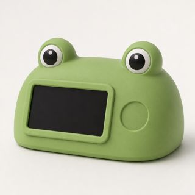
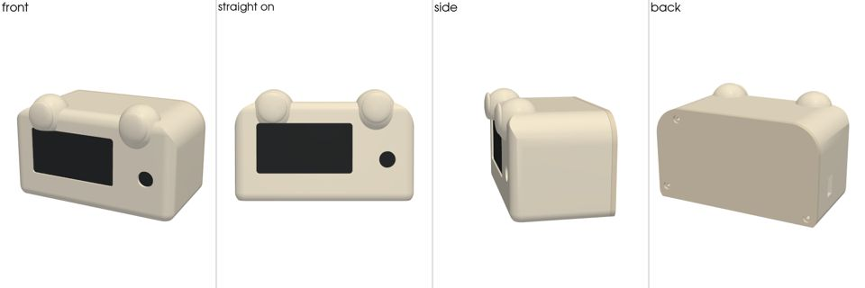
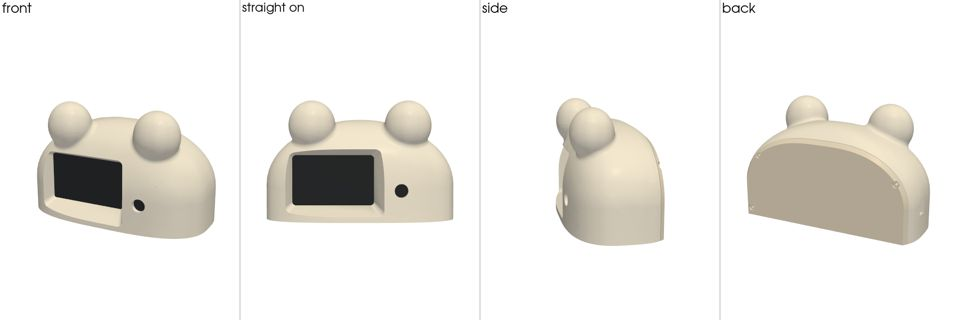
Robot
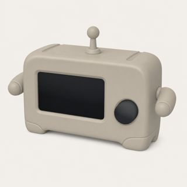
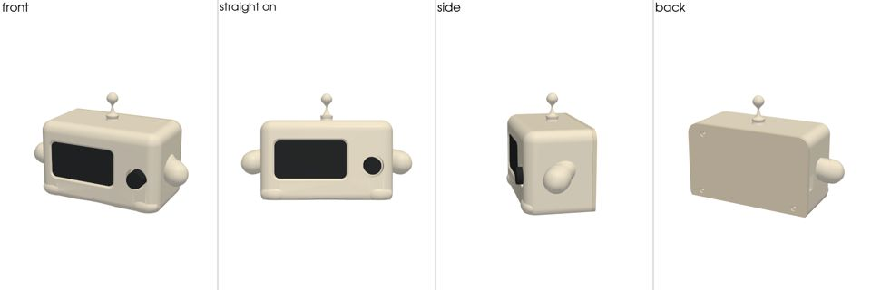
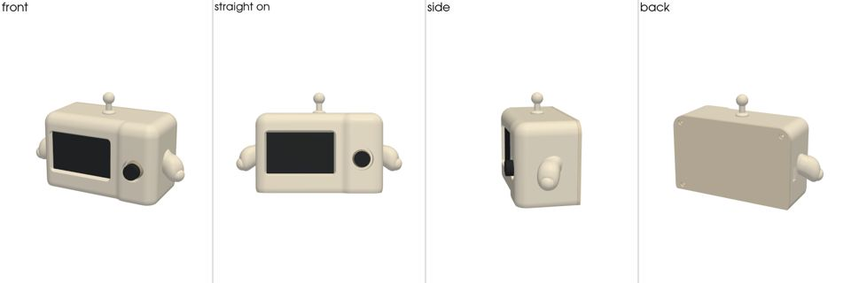
Whale (held back)
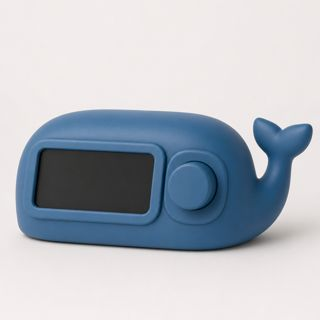
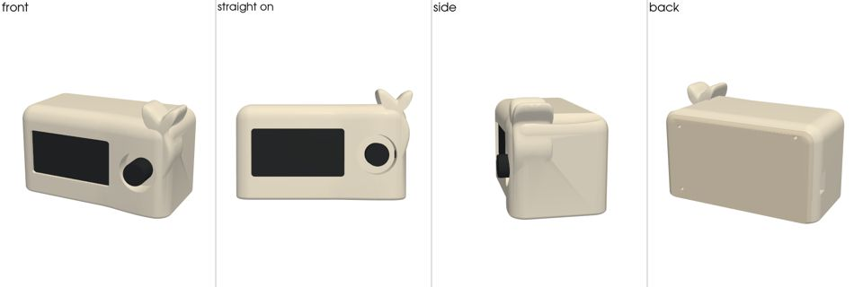
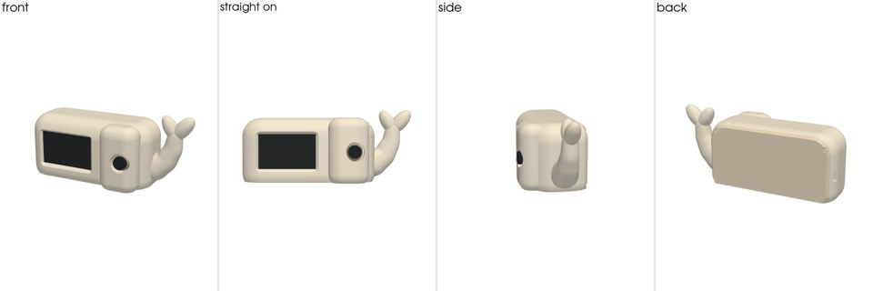
Rocket (held back)
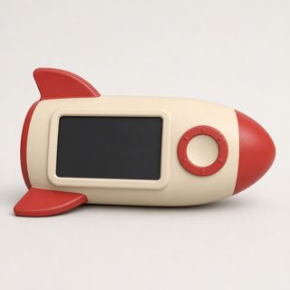
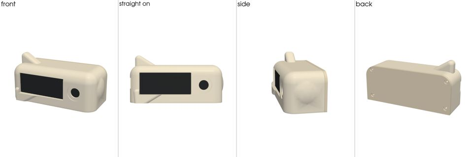
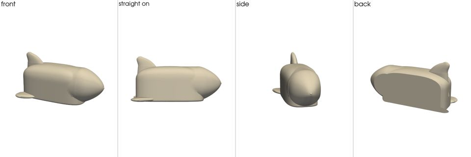